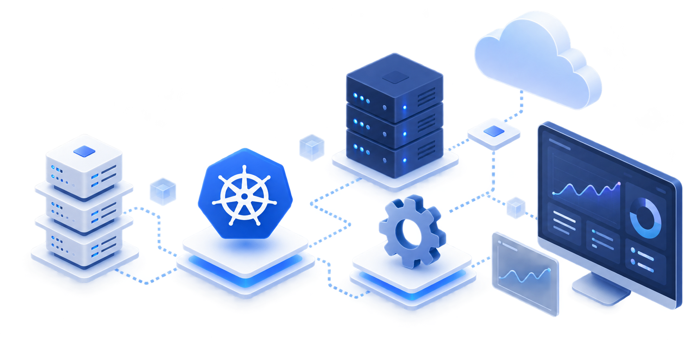
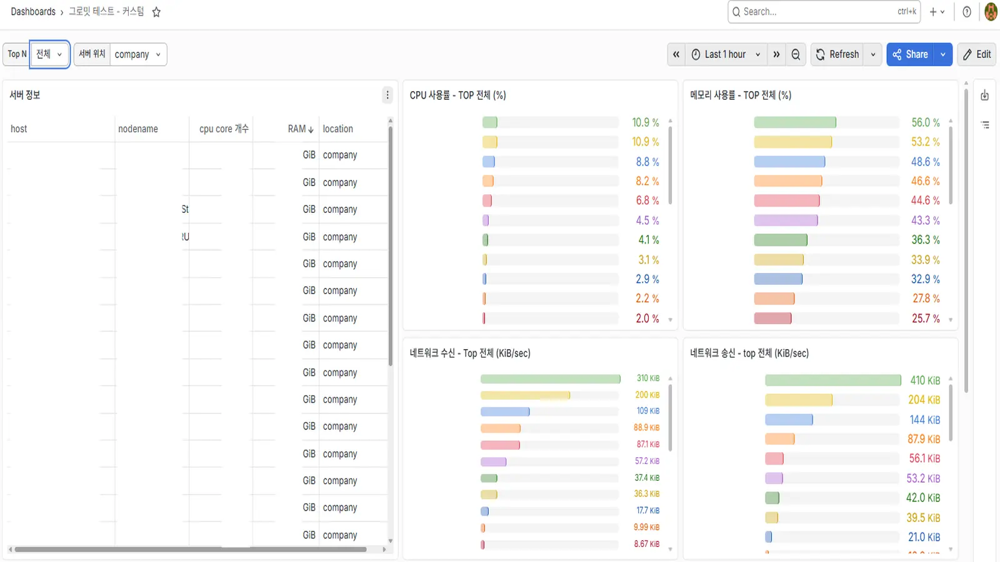

DevOps Engineer Intern
Infrastructure · Automation · Monitoring
SERVER · DEVOPS ENGINEER / 김지오
문제의 원인을 끝까지 추적하고, 반복되는 과정은 자동화하며,
운영에서 얻은 경험을 기록하고 다음 개선으로 연결하는 엔지니어입니다.
SELECTED WORK
DevOps Engineer Intern
Infrastructure · Automation · Monitoring
코드로 구축한 Kubernetes 인프라
인프라 코드화 · 자동 구축 · 고가용성
축제 서비스 Cardinal
개발 · 배포 · 실제 운영
HOW I ENGINEER
인턴십을 통해 Kubernetes 기반 인프라 구축·자동화·모니터링과 실제 운영 환경을 경험했습니다.
이후 실제 사용자를 대상으로 운영되는 서비스에 직접 설계한 아키텍처를 적용하며,
운영에서 발견한 문제를 다시 구조 개선으로 연결해왔습니다.
OPERATING PRINCIPLES
기술보다 문제를 먼저 정의합니다.
무엇을 쓸지보다 왜 필요한지를 먼저 고민합니다.
문제를 구조로 해결합니다.
이전 경험과 제약 조건을 바탕으로 아키텍처를 능동적으로 설계합니다.
실제 운영으로 검증합니다.
동작한다는 것에 만족하지 않고 실제 사용자와 운영 환경에서 확인합니다.
경험을 다음 설계로 연결합니다.
문제와 해결 과정을 기록하고 다음 프로젝트의 개선점으로 남깁니다.
HOW I LEAD
내가 맡은 일을 깊이 이해하는 것에서 책임감 있는 리더십이 시작된다고 생각합니다.
질문하고 의견을 제시하며, 소통과 역할의 문제를 발견하면 팀이 더 잘 움직일 수 있는 방식으로 계속 개선해왔습니다.
COMMUNICATION
소통이 원활하지 않았던 초기 운영을 돌아보며 전달과 피드백 방식을 개선했습니다. 이를 통해 역할과 진행 상황이 자연스럽게 공유되는 협업 구조를 만들어갔습니다.
INITIATIVE
기존의 동아리 프로그램이 창업 동아리의 목적과 맞지 않는다고 판단해, 구성원들이 실제 창업 과정을 경험할 수 있도록 프로그램의 방향과 운영 프로세스를 재설계했습니다.
REST API 구현 · 조회 쿼리 최적화
VPC 네트워크 구성 · ALB/ASG 기반 확장 구조 설계
Staging Docker 구성 · Production Kubernetes 운영
브랜치별 빌드·배포 자동화 · Blue-Green 기반 무중단 배포
사내 모니터링 서버 구축 · 운영 대시보드 설계
Kubernetes 클러스터 부트스트랩 자동화 · 인프라 구성 코드화
OS 설치 및 서버 초기 구성 · BMT 폐쇄망 환경 재현
인프라를 직접 다루며, 더 안정적인 운영 방식을 만들어왔습니다.
Linux · Kubernetes · Ansible · Prometheus/Grafana 기반 AI 인프라 구축 · 자동화 · 모니터링 실무

사내 인프라의 구축과 운영을 직접 담당하며 반복되는 작업과 관리상의 비효율을 자동화와 표준화로 개선했습니다.
고객사 BMT에서는 실제 현장 환경에 맞춘 인프라 구축과 기술 대응을 수행했습니다.
6종 OS 템플릿 구축 · 반복 설치 제거 · VM 구축 시간 단축
78대 서버 중앙 모니터링 · Prometheus/Grafana · GPU 지표 수집
78대 서버 정보 자동 수집 · Ansible · 약 5시간의 반복 업무 제거
폐쇄망 환경 재현 · Kubernetes 배포 환경 구성 · GPU 인프라 현장 대응
PROBLEM
VM은 만들 수 있었지만, 같은 환경을 반복해서 준비하는 과정에 운영 관점의 비효율이 있었습니다.
새로운 VM이 필요할 때마다 ISO를 연결하고 OS를 설치한 뒤 기본 설정을 다시 수행해야 했습니다.
RISKVM 수가 늘어날수록 동일한 구축 작업과 대기 시간이 반복됨
동일한 용도의 VM이라도 OS 버전과 초기 설정이 달라질 수 있어 환경 차이에서 발생하는 문제를 다시 확인해야 했습니다.
RISK환경 불일치로 인한 재작업과 트러블슈팅 비용 증가
NVIDIA Driver는 Kernel과의 호환성을 함께 고려해야 해, 검증된 조합을 매번 다시 구성하는 방식은 운영 부담이 컸습니다.
RISKDriver · Kernel 조합 차이로 실행 환경의 안정성이 흔들릴 수 있음
ROLEProxmox VM 환경 분석 · 표준화 방식 설계 · Template 구축 및 검증
STACKProxmox VE · Ubuntu · Rocky Linux · NVIDIA Driver
매번 환경을 새로 만드는 대신, 검증된 실행 환경 자체를 재사용하는 방향으로 표준화했습니다.
SOLUTION
단순히 Template을 만든 것이 아니라,
어떻게 재사용할지를 기준으로 구조를 정했습니다.
DECISION
WHY
Proxmox 도입 초기 단계였기 때문에 자동 초기화 체계를 먼저 도입하기보다, 이미 검증된 OS·Driver 환경을 빠르게 재사용하는 것을 우선했습니다.
Clone 이후 IP와 리소스는 수동으로 조정했습니다.
TRADE-OFF
빠르게 표준 환경을 만들 수 있었지만,
IP·리소스 관리에 사람의 개입이 남았습니다.
DECISION
WHY
Linked Clone은 원본 Template의 디스크에 의존하기 때문에, 각 VM을 독립적인 개발·검증 환경으로 사용할 수 있도록 Full Clone 방식을 선택했습니다. Template의 기본 디스크 용량은 최소한으로 구성했습니다.
TRADE-OFF
Linked Clone보다 Storage 사용량은 늘지만, 원본 Template과 독립적인 실행 환경을 확보했습니다.
DECISION
WHY
NVIDIA Driver는 Kernel Module과 함께 동작하므로 Kernel이 임의로 업데이트되면 기존 Driver와 호환되지 않을 수 있습니다.
이를 막기 위해 Kernel 패키지를 고정하였습니다.
TRADE-OFF
최신 Kernel을 즉시 적용하는 대신, 검증된 GPU 실행 환경의 안정성과 재현성을 우선했습니다.
PROCESS & RESULT
설치 실패를 단순 오류로 보지 않고,
Kernel과 Package의 관계까지 추적했습니다.
상황
Template을 구성하기 위해 NVIDIA Driver를 설치하던 중,
실행 중인 Kernel에 맞는 Module을 빌드하지 못하며 설치가 실패했습니다.
원인 추적
현재 Kernel과 Module 빌드 조건을 확인했습니다.
kernel-devel · headers 버전 일치 여부를 확인했습니다.
해결 방법
필요한 Package를 찾아 Build 환경을 맞췄습니다.
일치한 환경에서 정상 동작을 확인했습니다.
RESULT
기본 Repository에 없는 Kernel Build Package를 직접 탐색·설치해 NVIDIA Driver의 Kernel Module 빌드를 정상화했습니다.
하나의 설치 실패도 해당 Package만 보는 것이 아니라
Kernel · Module · Repository까지 연결된 실행 환경 전체를 확인해야 한다는 점을 배웠습니다.
Template로 동일 환경을 재현한 뒤에도 IP와 CPU·Memory·Disk 설정은 남았습니다.
다음 단계에서 cloud-init과 IaC가 필요함을 확인했습니다.
PREVIEW
서버의 이상 징후를 발견할 수 있도록,
관측 가능한 운영 환경을 만들었습니다.
사내와 데이터센터의 다수 서버를 관리하고 있었지만,
각 서버의 자원 상태를 한 화면에서 확인할 수단이 없었습니다.
비정상적인 자원 점유와 이상 징후를 제때 발견하기 어려운 상황에서,
통합 모니터링 환경의 구축을 맡았습니다.
운영 범위

PROBLEM
서버는 많았지만, 상태를 비교하고 이상을 빠르게 찾는
공통의 관측 지점이 없었습니다.
CPU · 메모리 · 네트워크 상태를 서버별로 접속해 확인해야 했습니다.
RISK이상 징후 발견 지연 · 개별 확인에 의존한 운영 판단
node_exporter 설치와 기본 설정을 서버마다 따로 수행해야 했습니다.
RISK수동 설치 · 설정 편차 · 신규 서버 편입 지연
일반 시스템 지표와 달리 GPU 상태는 별도 방식으로 수집해야 했습니다.
RISK통합 대시보드에서 GPU 상태를 함께 판단하기 어려움
ARCHITECTURE
Ansible 기반 IaC로 수집 환경을 표준화하고,
PostgreSQL 적재를 통해 GPU까지 관측 범위를 확장했습니다.
DATA FLOW
서버 목록 · 접속 정보
설치 · 설정 · OS 분기
CPU · Mem · Network → Prometheus
Ansible 스냅샷 → PostgreSQL
두 수집 경로 비교
일반 시스템 지표와 GPU · Process 지표는 서로 다른 수집 경로를 거쳐 하나의 Grafana 대시보드에서 확인했습니다.
DEPLOYMENT
COMPATIBILITY
COLLECTION
서버 자원 가시성
78대 통합 대시보드Grafana 한 화면에서 실시간 확인신규 서버 모니터링 편입
약 20분 → 약 2분Inventory 등록 후 Playbook 실행TROUBLESHOOTING & INSIGHTS
5분마다 GPU 지표를 수집하자 하루 약 4GB가 쌓였습니다.
정보 최신성과 저장 용량 사이의 균형을 고민해야 했습니다.
STORAGE
관찰전체 GPU 지표를 수집하면서 5분마다 1,000건 이상의 지표 값이 디스크에 기록됐습니다.
판단GPU 이상은 CPU·메모리 등 시스템 지표와 함께 판단할 수 있다고 보고, GPU 수집 주기를 15분으로 조정했습니다.
TRADE-OFFGPU 정보의 즉시성은 낮아졌지만, 모니터링 서버의 저장 여력을 확보했습니다.
CONSISTENCY
관찰GPU가 제거·교체된 뒤에도 이전 정보가 남아 실제 구성과 화면이 달라졌습니다.
판단gpu 테이블에 활성 상태 컬럼을 추가하고, Ansible 수집 시 제거된 GPU는 false로 갱신했습니다.
RESULT현재 구성에 존재하는 GPU만 표시해 실제 서버 구성과 대시보드의 정합성을 유지했습니다.
RESULT
INSIGHTS
PREVIEW

상황 및 운영 결과
70여 대 사양 수집 시간
관리 대장 불일치 발견
방치된 GPU 서버 발견
관리 문서 갱신
PROCESS
WHY 01
WHY 02
WHY 03
WHY 04
제약 조건
설계 포인트
RTX 5000 4장 구성으로 검증하면 현장 H100 환경과 결과가 달라질 수 있다고 판단했습니다.
↓AWS H100 사전 검증 환경 구성
AWS H100 인스턴스를 예약해 고객사 환경과 유사한 사전 검증 환경을 구성했습니다.
개발팀이 사용하던 Gemma 이미지의 태그가 latest로 지정되어 있었습니다.
↓SHA 일치 이미지 버전 고정
USB 반입 전 Docker Hub에서 SHA가 일치하는 정확한 이미지 버전을 찾아 고정했습니다.
이미지가 교체되더라도 쉽게 테스트할 수 있는 환경을 조성해야 했습니다.
↓K8s Deployment · Service 구성
Deployment와 Service 리소스를 구성해 이미지 교체와 서비스 접근 과정을 단순화했습니다.
ROLEBMT 인프라 단독 전담 · Kubernetes 리소스·네트워크 구조 설계
AWS 사전 검증 환경 구축 및 현장 배포 대응
STACKKubernetes · vLLM · Gemma4-31B-it · AWS H100 · Linux (RHEL)
PROCESS
WHY 01
WHY 02
WHY 03
WHY 04
WHY 05
WHY 06
TROUBLESHOOTING & RESULT
FILE INTEGRITY
관찰현장에서 확인한 모델 파일은 예상한 59GB가 아니라 1.7GB로 표시됐습니다.
원인전날 AWS H100 서버에서 최종 검수를 마친 뒤 최신 파일만 USB에 담으려 SFTP로 복사했는데, 전송이 끝나기 전에 완료 여부를 확인하지 않고 분리했습니다.
대응불변이 확인된 safetensor를 제외한 파일만 다시 동기화하고, 서버에서 정상 파일을 재확인한 뒤 USB를 다시 반입했습니다.
결과모델 파일을 정상 상태로 복구해 현장 배포 기준을 맞췄습니다.
GPU RESOURCE
관찰현장 H100 GPU가 MIG로 분할돼 있어, 기존 GPU Index 기반 리소스 요청은 사용할 수 없었습니다.
원인고객사가 GPU 할당 방식을 따로 언급하지 않고 H100 한 장을 제공한다고만 해, Index 방식일 것으로 가정했습니다.
대응GPU Index와 CUDA_VISIBLE_DEVICES 방식 대신, 배정된 MIG 프로파일 리소스를 requests·limits로 요청하도록 Manifest를 변경했습니다.
결과vLLM(Gemma4-31B-it) 파드의 정상 기동을 로그로 확인했습니다.
RESULT
INSIGHT